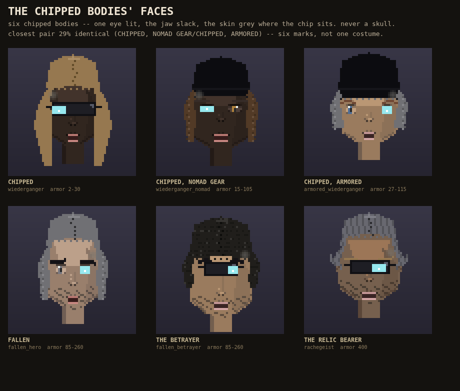

Six of the dead now have the face the lore says they should: a person with a chip in them, not a skull. One eye glows and never blinks -- that is where the chip sits. The jaw hangs open. The skin beside the lit eye is grey.
Checked on real pixels: the grey mark covers a small part of the face on every one (never more than 8%, and the lit eye is the exact colour it should be on all six), so it reads as a person with a mark, not a replaced head. The six chipped bodies are visibly different from each other too -- closest pair 29% identical.

Not built this round: no lane has dressed a chipped body's actual outfit yet (unlike the living brigand tiers), and the kill recap screen that would show this face does not exist. Both named honestly, neither guessed at.